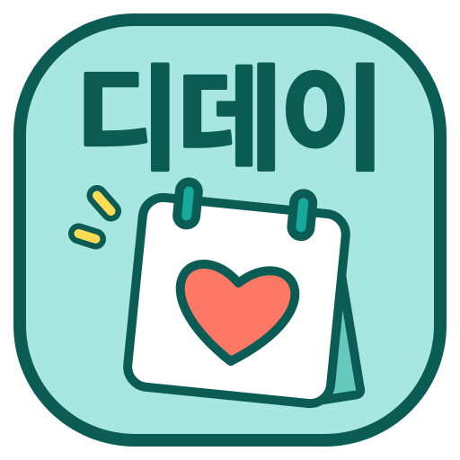
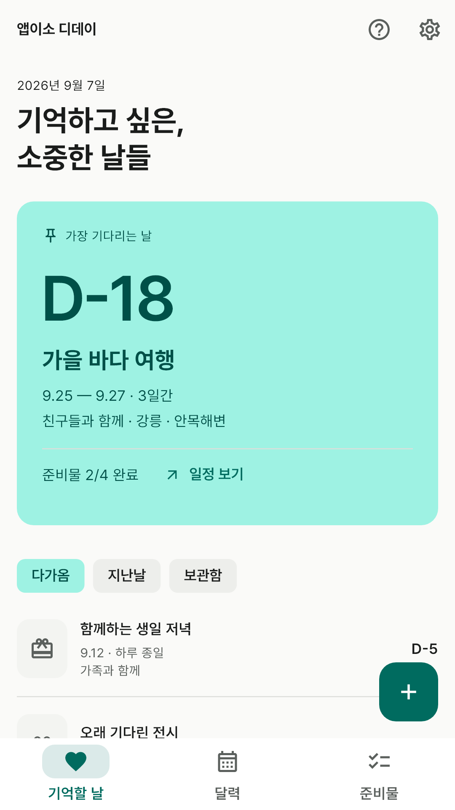
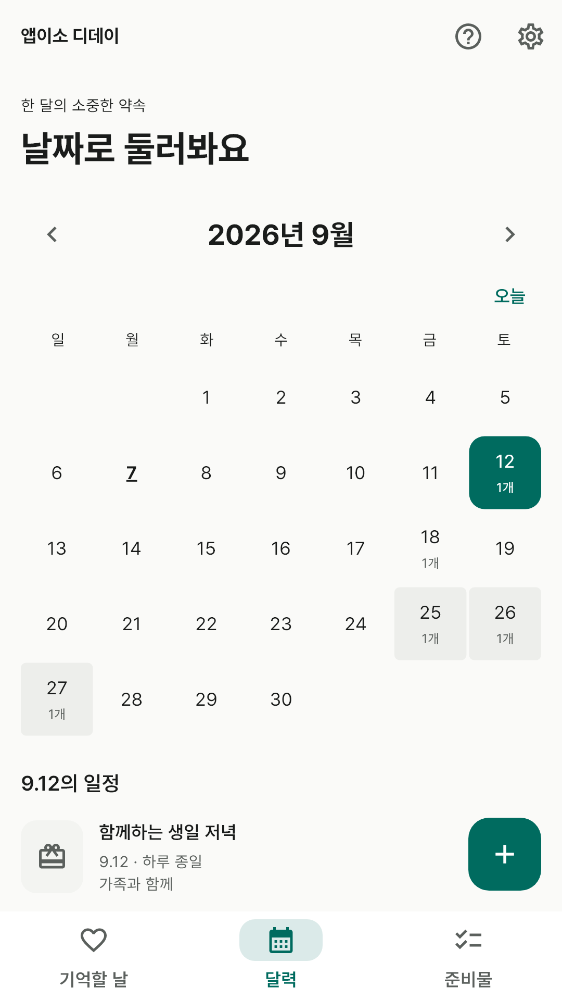
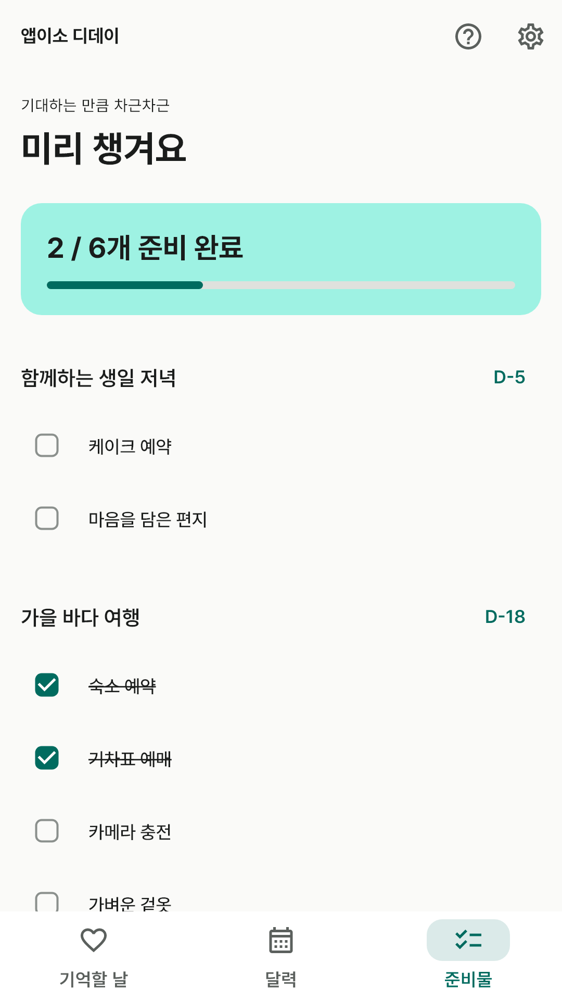
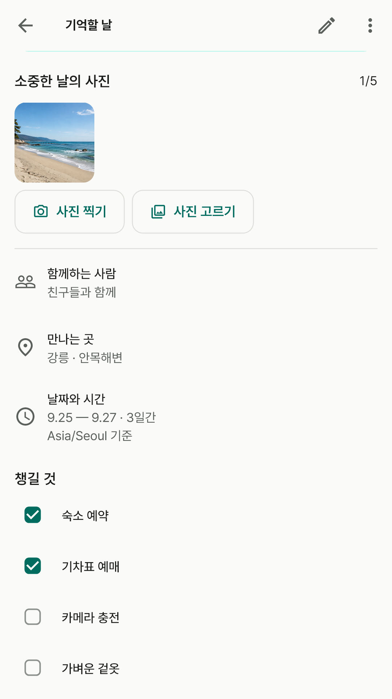
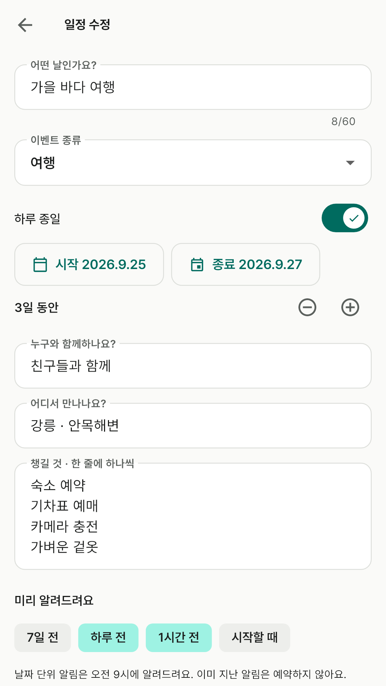
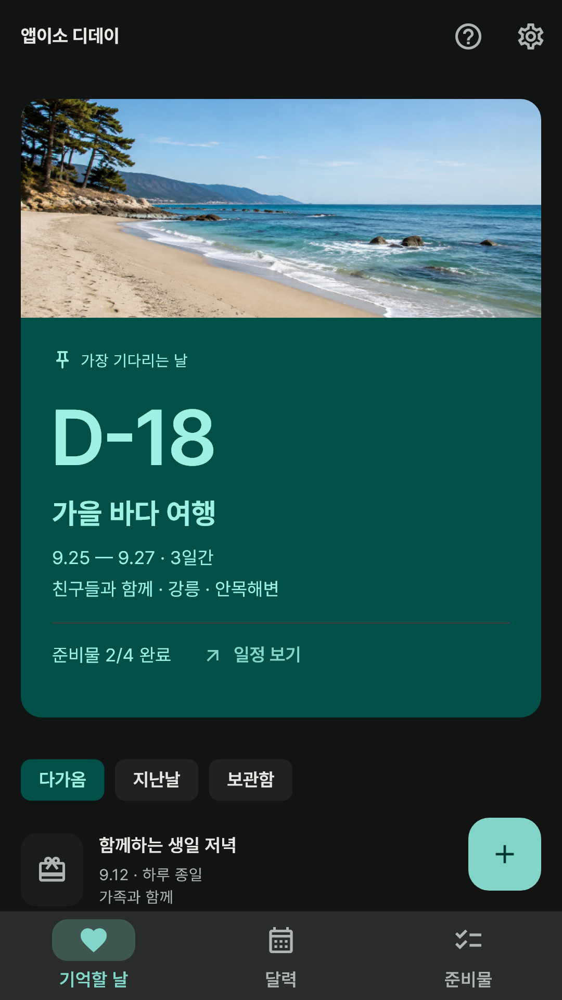

가장 기다리는 날이 먼저
중요한 일정을 고정하고 D-Day를 크게 확인해요. 며칠 동안 이어지는 일정의 진행 일수도 보여줘요.
앱이소 디데이에 소중한 약속을 남겨요.
남은 날짜와 준비물, 그날의 사진을 함께 담아요.

중요한 일정을 고정하고 D-Day를 크게 확인해요. 며칠 동안 이어지는 일정의 진행 일수도 보여줘요.
각 날짜의 약속과 기간 일정을 확인해요. 달력과 D-Day는 같은 기록으로 연결돼요.
이벤트 종류, 동행인, 장소, 시작·종료 시각과 메모를 적고 준비물을 하나씩 체크해요.
직접 촬영하거나 기기에서 고른 사진을 일정과 함께 보관해요. 대표 사진을 고르고 확대해서 볼 수 있어요.






화면의 일정과 사진은 기능을 설명하기 위한 예시예요.
일정과 사진을 개발자 서버로 보내지 않아요. 사진은 긴 변 2,048px 이내의 사본으로 저장하며 갤러리 원본은 바꾸지 않아요. 자동 클라우드 백업은 제외하고 Android 기기 간 직접 이전은 허용해요.
현재 수동 백업·복원은 지원하지 않아요. 앱 제거 또는 데이터 삭제 시 기록과 사진도 사라질 수 있어요. 미리 알림은 권한과 기기 절전 설정에 따라 도착 시점이 달라질 수 있어요.